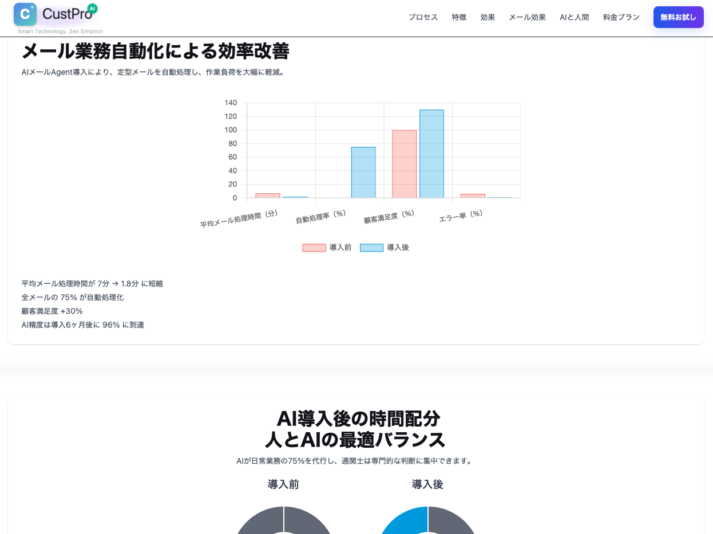
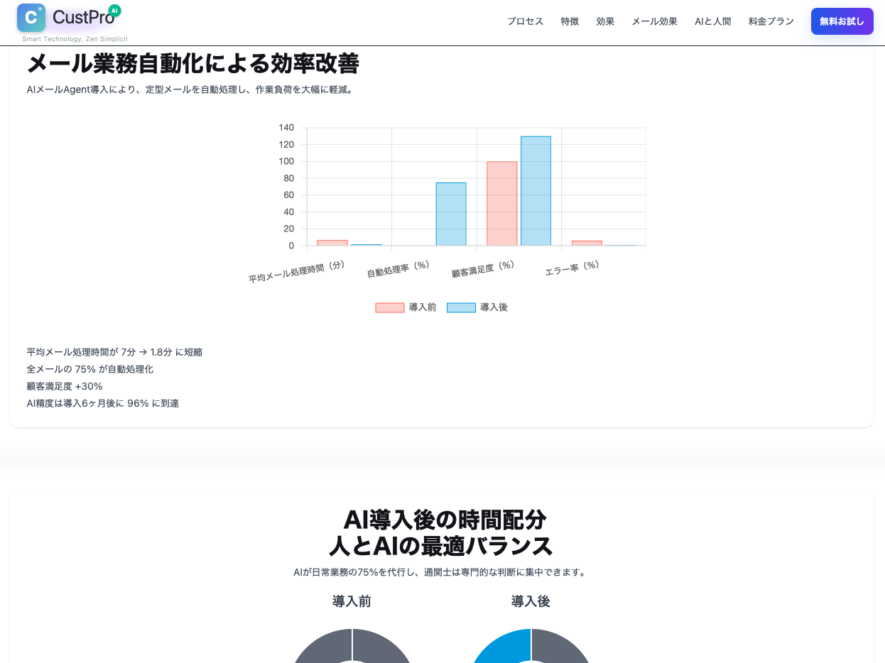

Terabox Inc. テラボックス株式会社
AIソリューション導入事例集
AS-IS（現状課題）→ TO-BE（AI導入後）
2025年実績：12案件のうち10案件を抜粋紹介
作成日：2026年1月7日
版：1.0
CASE 08
🛃 通関：CustPro（AI-OCR・HSコード推薦）
業界：貿易・通関
AS-IS（現状課題）
- ✗ メール添付の書類を人手で開いて転記・確認
- ✗ HSコードの選定が属人化し、判断のばらつきが出る
- ✗ NACCS/TradeNet等への入力・出力に時間がかかる
- ✗ 繁忙期に処理が滞留し、遅延・コスト増につながる
→
TO-BE（改善後）
- ✓ メール受信から案件化までをエージェントで自動処理
- ✓ AI-OCRで書類を構造化し、必要項目を自動抽出
- ✓ HSコードをAI推薦し、根拠とともに提案
- ✓ NACCS/TradeNet向けデータ出力まで自動化
📊 定量成果
90%
業務時間短縮
80%
コスト削減
99.2%
AI-OCR精度
5分
平均処理時間
※ 公開情報の記載内容を要約（詳細は参照リンク）
🔧 採用技術
AI-OCR
HSコード推薦（分類）
メールエージェント
業務ワークフロー自動化
外部システム連携（NACCS/TradeNet）
 

CASE 10
🏗 建設：AI外装デザイン最適化（インテリジェントエージェント）
業界：建設・建築設計
AS-IS（現状課題）
- ✗ 配置図・要望・参考画像が分散し、整理に時間がかかる
- ✗ 外装・景観の参考収集と比較が人手で非効率
- ✗ パースと概算が反復作業になり、設計リードタイムが長期化
- ✗ 修正が増えるほど、設計と見積の整合が取りづらい
→
TO-BE（改善後）
- ✓ 配置図と希望イメージ入力で、AIが意図を整理し検索条件を最適化
- ✓ マルチモーダル検索とRAGで外装素材・参考事例を即時提示
- ✓ AIが複数のデザイン案（パース・図面・概算）を自動生成
- ✓ フィードバックを反映して最適化し、最終設計図と見積を一括出力
📊 想定効果（PoC試算）
60%
設計リードタイム短縮
40%
修正回数削減
1時間
概算作成時間
3案/回
提案バリエーション
※ PoCでの想定効果（条件により変動）
🔧 採用技術
マルチモーダル検索
RAG知識ベース
画像生成（設計パース）
プロンプト最適化
概算見積自動化
🔗 参照：設計PoCデモ（社内）